1  |
M'2 U M U2 M'U M'2 |
2  |
M'2 U' M U2 M' U' M'2 |
| 3 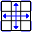 |
M2 U M2 U2 M2 U M2 |
| 4 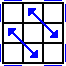 |
M' U (M'2 U)2 M' U2 M'2 U' |
5  |
x' R2 D2 (R' U' R) D2 (R' U R') |
| 6 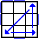 |
x' (R U' R) D2 (R' U R) D2 R'2 |
| 7 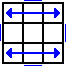 |
(R2 U R' U') y (R U R' U')2 (R U R') y' (R U' R2) |
| 8 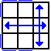 |
(R U R' U') (R' F) (R2 U' R' U') (R U R' F') |
| 9 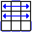 |
(R' U R U') (R2' F' U') (F U R U') x' (R2 U' R' U) |
10  |
(R' U R' d') (R' F' R2 U') (R' U R' F R F) |
| 11 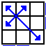 |
F (R U' R' U') (R U R' F') (R U R' U') (R' F R F') |
| 12 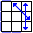 |
x U2 (r' U' r U2) (l' U R' U' R2) |
13  |
(R U R' F') (R U R' U') (R' F R2 U' R' U') |
| 14 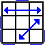 |
(R' U2) (R U' U') (R' F R U R' U') (R' F' R2 U') |
15  |
(R U' U') (R' U2) (R B' R' U') (R U R B R2' U) |
| 16 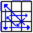 |
(R2' u' R U' R) (U R' u) (R2 f R' f') |
| 17 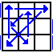 |
(R U R') y' (R2' u' R U') (R' U R' u R2) |
| 18 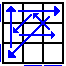 |
(R2 u) (R' U R' U') (R u') (R2' F' U F) |
19  |
(R' d' F) (R2 u) (R' U) (R U' R u' R2) |
20  |
(R U R' U) (R U R' F') (R U R' U') (R' F) (R2 U' R' U2) (R U' R) |
| 21 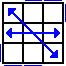 |
(R' U R U') (R' F' U') (F R U R' F) (R' F' R U' R) |